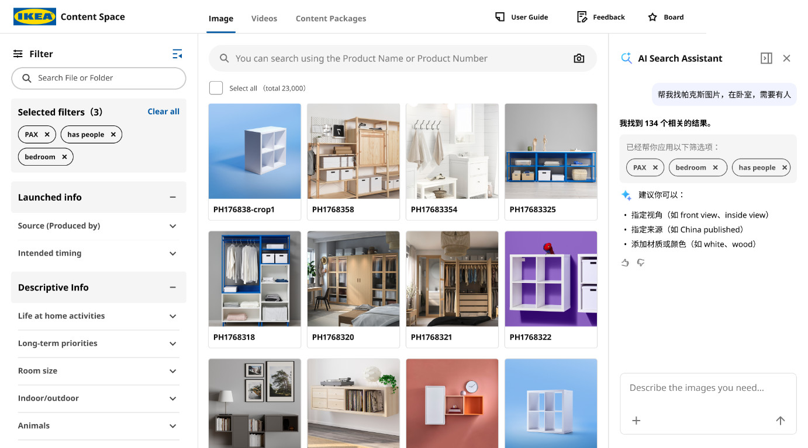

CASE A
AI-ASSISTED SEARCHAI 搜索体验 · 对话与筛选
用户输入一句话后，AI 的判断应该变成可见、可修改的条件。
现有搜索已经能返回自然语言相关内容，真正缺少的是把 FY、Source、Project 等结构化意图显示出来。新方案不是增加一个独立 Chat，而是让 AI 先生成待确认条件。
- 自然语言拆成 Semantic Query + Structured Filters
- 用户可以删除、修改或补充 AI 建议
- 确认 Apply 后再执行，不让不确定条件自动生效
